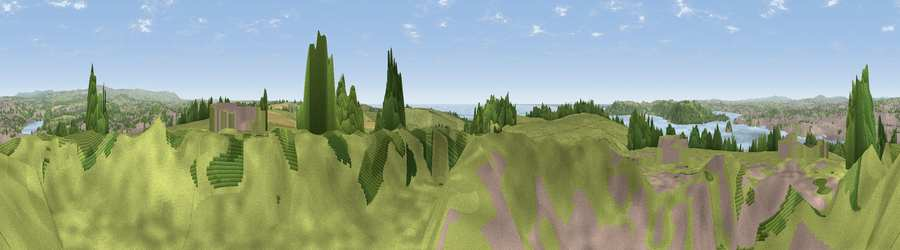

Viewpoint near Down Thomas
#4896 in England · top 10% of its area beats it · near Down ThomasThe view, rendered

A 360° render of this exact spot computed from the terrain model, tree cover and land cover — summer colours, afternoon light, calibrated against photographs of famous viewpoints. Real trees, hedges and buildings will differ in detail.
The panorama
Grey silhouette: terrain skyline in each direction (720 bearings, Earth curvature and refraction included). Dashed green: skyline with trees (+15 m) and buildings (+8 m) as obstacles. Blue strip: how far the ground is visible on each bearing.
Where the view opens
Wedge length = distance to the farthest visible ground on that bearing (vegetation-aware). Rings at 10, 25 and 50 km.
What fills the view
53% grassland · 19% woodland · 12% water · 12% built-up · 5% cropland
Angular shares of the visible panorama (visual magnitude), not map area. Landscape diversity 0.57 (0–1 Shannon).
Key numbers
More beautiful places nearby
The staircase of upgrades: each row has a higher view potential than everything closer. Driving times are estimates from straight-line distance, calibrated against real road routing — check an actual route before setting out.
| Place | Direction | Drive | Score |
|---|---|---|---|
| Viewpoint near Down Thomas | S · 2 km | ~4 min | 75.0 |
| Viewpoint near Newton Ferrers | SE · 5 km | ~12 min | 78.2 |
| Viewpoint near Cawsand | WSW · 8 km | ~16 min | 81.0 |
| Viewpoint near Lee Moor | NNE · 12 km | ~23 min | 82.7 |
| Viewpoint near Downderry | W · 16 km | ~28 min | 83.5 |
| Viewpoint near Hope | ESE · 23 km | ~37 min | 84.4 |
| Viewpoint near East Prawle | ESE · 31 km | ~49 min | 84.6 |
| Pencarrow Head | W · 34 km | ~52 min | 86.0 |
50.34621, -4.11414 · source: screening · position refined by local search. Computed location — check access rights before visiting.